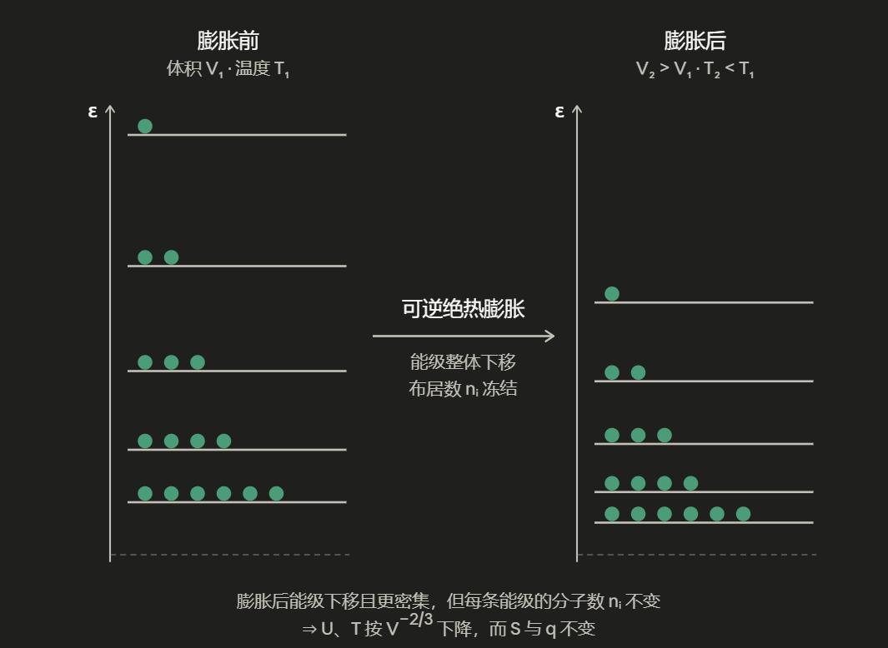

第四章 热力学基础
第一节 热现象
1.1 伽利略的热现象物理图像
定义温度：物体的冷热程度
气体温度计：温度正比于气体体积，\(T \propto V\) \((P=const.)\)
牛顿定义冰为零度，火为一百度，体温为\(12\)度等\(12\)个标度。实际线性标度只需要两个标度。摄氏温标定义大气压下，水的沸点为\(100°C\)，水的凝点为\(0°C\)。
绝对温标/理想气体状态方程：
\[T \propto V\]
\[T = A \cdot V = \frac{B}{n} \cdot V\]
\[P \propto \frac{1}{V}\]
\[T = \frac{C \cdot PV}{n} = \frac{PV}{nR}\]
其中气体常数\(R=N_A·K_B\)
1.2 拉瓦锡的化学图像
① 一定量的C在足量O₂中反应总
$\(\ce{C + O_{2} -> CO_{2}}\)$
焙烧浸雪的冰，意味着等量的热质粒子释放，热质粒子无重
① 是改变物质的结构（钢的形成）
② 上述结论对所有可燃物成立。
③
$\(\text{广义热质} = U\)$
$\(\text{自由热质} = Q\)$
④
$\(\text{热质} \neq \text{温度}\)$
$\(\text{热质} \neq \text{传热过程传递的热量}\)$
⑤ 孤立系统的热质守恒（heat）
1.3 热功当量
\[\mathrm{d}U = \mathrm{d}W + \mathrm{d}Q\]
有且仅有两种方式改变系统能量
第二节 热力学基本框架
2.1 基本思想
单一系统包括开放系统、封闭系统、孤立系统。
-
不再是质点，具有结构
-
整体认识作用及状态，环境 + 边界条件
-
状态由状态函数来描述，包括广度性质和强度性质
2.2 热力学第一定律
对于封闭系统，状态函数内能（\(U\)）的微小变化（全微分 \(\mathrm{d}\)）等于系统吸收的微小热量与环境对系统作的微小功（过程量，非全微分 \(\delta\)）之和：
\[\underbrace{\mathrm{d}U}_{\text{系统内能变化}} \xlongequal{\text{封闭系统}} \underbrace{\delta Q + \delta W}_\text{环境与系统的能量交换}\]
- \(\delta Q\)：传递微小热量的非全微分（过程量，与路径相关）。对于宏观过程，总热量：
$\(Q = \int_{\text{始态}}^{\text{终态}} \delta Q\)$
以体积功为例，外界对活塞的作用力为 \(F\)，活塞横截面积为 \(S\)，微小位移为 \(\mathrm{d}l\)：
\[F = P_{\text{外}} \cdot S\]
微小体积功：
\[\delta W = F \cdot \mathrm{d}l = P_{\text{外}} \cdot S \cdot \mathrm{d}l\]
由于系统微小体积变化 \(\mathrm{d}V = -S \cdot \mathrm{d}l\)（环境对系统压缩时 \(\mathrm{d}V < 0\)，正功），体积功：
\[\delta W = -P_{\text{外}} \mathrm{d}V\]
总功为该路径上的积分：
\[W = \int_{\text{始态}}^{\text{终态}} \delta W = \int_{V_1}^{V_2} -P_{\text{外}} \mathrm{d}V\]
2.3 可逆过程热力学
容器顶活塞上有沙子：\(p^\circ = 2\text{ bar}\)，\(\text{Ar } 300\text{K}\)
① 一次性移走沙子
原先
\[p_{\text{外}}^\circ = p^\circ = 2\text{ bar}\]
现在
\[p_{\text{外}} = \frac{1}{2} p_{\text{外}}^\circ\]
不可逆自发膨胀（\(P\)不是定值，\(P\)分布状态无非“逆序复制”）
\[dW = -p_{\text{外}} dV\]
\[W = -\int P_{\text{外}} dV = -\frac{P_{\text{外}}^\circ}{2} \cdot \Delta V = -nRT \frac{\Delta V}{2V}\]
② 一粒一粒拿沙子：准静态过程，可逆自发膨胀
准静态（\(P_{\text{外}} = P + dp, dp \to 0\)）：系统压强 \(P\) 与环境外压 \(P_{\text{外}}\) 的差值无穷小。过程进行得无限缓慢，系统无限接近于力学平衡状态。
过程可反转（\(P\) 在 \(P+|dp|\) 与 \(P-|dp|\) 之间切换）：由于内外压差极其微小，只需对环境施加一个无穷小的改变，就能改变整个热力学过程的方向。
\[P = \frac{nRT}{V} + （dp \to 0）\]
\[P_{\text{外}} = P + dp \quad \left(\text{终，} P_{\text{外}} = \frac{P_{\text{外}}^\circ}{2}\right)\]
\[W = -\int P_{\text{外}} dV \approx -\int P dV = -\int \frac{nRT}{V} dV\]
第三节 热量计算
基于封闭系统，无相变，无化学反应
3.1 定容热量
\[dV \equiv 0, \quad dW_{\text{体}} \equiv 0\]
\[\therefore \delta q = dU\]
Tip
\(\delta q\) 不是全微分（没有“热函数”“功函数”），写成\(\delta\)，与路径相关。
\[U = f(n, T, V) \quad \]
\[dU = \left(\frac{\partial U}{\partial n}\right)_{T,V} dn + \left(\frac{\partial U}{\partial V}\right)_{n,T} dV + \left(\frac{\partial U}{\partial T}\right)_{n,V} dT\]
\[\therefore dU = C_V\]
\[\Delta U = \int_{\text{初}}^{\text{终}} C_V dT\]
\[\text{đ}q_V = dU = C_V dT \quad (dn \equiv 0, dV \equiv 0, dW_{\text{非}} \equiv 0)\]
等容热效应
\[q_V = \int_{\text{初}}^{\text{终}} C_V dT\]
其中
\[C_V \equiv \left(\frac{\partial U}{\partial T}\right)_{n,V} = \left(\frac{\delta Q}{\partial T}\right)_{n,V}\]
3.2 定压热量
(\(dn \equiv 0\), \(P \equiv P_{\text{外}} = const.\), \(dW_{\text{非}} = 0\))
\[\text{đ}q_p = dU - dW\]
\[= dU + P dV = dU + P dV + V dP\]
\[= d(U + PV) = dH\]
焓：能量类状态函数
\[H \equiv U + PV\]
\[H = f(n, T, P)\]
\[dH = \left(\frac{\partial H}{\partial n}\right)_{T,P} dn + \left(\frac{\partial H}{\partial P}\right)_{n,T} dP + \left(\frac{\partial H}{\partial T}\right)_{n,P} dT\]
定压热容：
\[C_p \equiv \left(\frac{\partial H}{\partial T}\right)_{n,P}\]
\[\left(\frac{\partial H}{\partial T}\right)_{n,p} = \left(\frac{\partial (U+PV)}{\partial T}\right)_{n,p} = \left(\frac{\partial U}{\partial T}\right)_{n,p} + \left(\frac{\partial (PV)}{\partial T}\right)_{n,p}\]
\[\therefore dH = C_p dT \]
\[\therefore \Delta H = \int_{T_1}^{T_2} C_p dT$$若：$dn \equiv 0, dp \equiv 0, dW_{\text{非}} \equiv 0$$$q_p = \int_{T_1}^{T_2} C_p dT\]
3.3 焓 - 内能 \(C_p - C_V\)
焓的定义有方便的成分
孤立系统：\(dU \equiv 0\),
\[dH = \cancel{dU}^0 + d(pV) \xlongequal{\text{理气}} d(nRT) = \cancel{RTdn}^0 + nRdT\]
\[U + pV = H > U\]
\[C_V \equiv \left(\frac{\partial U}{\partial T}\right)_{n,V} \quad \text{状态函数}\]
\[C_p = \left(\frac{\partial H}{\partial T}\right)_{n,p} = \left(\frac{\partial U}{\partial T}\right)_{n,p} + \left(\frac{\partial (pV)}{\partial T}\right)_{n,p}\]
不再是热能容量，还是状态函数
对理想气体：
\[C_p = C_V + 0 + \left(\frac{\partial (nRT)}{\partial T}\right)_{n,p}\]
\[\therefore C_p = C_V + nR\]
Note
\[C_p = \left(\frac{\partial U}{\partial T}\right)_{n,p} + \left(\frac{\partial (pV)}{\partial T}\right)_{n,p}\]
通过全微分展开为两部分：
\[dU = \left(\frac{\partial U}{\partial T}\right)_V dT + \left(\frac{\partial U}{\partial V}\right)_T dV\]
边同除以 \(dT\)（引入恒压条件）：
\[\left(\frac{\partial U}{\partial T}\right)_p = \left(\frac{\partial U}{\partial T}\right)_V + \left(\frac{\partial U}{\partial V}\right)_T \left(\frac{\partial V}{\partial T}\right)_p\]
\(\left(\frac{\partial U}{\partial V}\right)_T\) 对于理想气体，分子间不存在相互作用力，其内能只受温度影响。 \(\left(\frac{\partial U}{\partial V}\right)_T = 0\)。
\[\left(\frac{\partial (pV)}{\partial T}\right)_{n,p} = \left(\frac{\partial (nRT)}{\partial T}\right)_{n,p} = nR\]
\[\therefore C_{p,m} - C_{V,m} = R\]
第四节 绝热过程
4.1 绝热过程与系统温度
\[\text{đ}q \equiv 0\]
\[dU = \cancel{\text{đ}q}^0 + dW = -P_{\text{外}} dV + \cancel{dW_{\text{非}}}^0\]
\[dn \equiv 0, \quad dW_{\text{非}} \equiv 0\]
\[dU = C_V dT + \left(\frac{\partial U}{\partial V}\right)_{n,T} dV\]
理想气体：
\[\left(\frac{\partial U}{\partial V}\right)_{n,T} = 0 \quad \]
\[\therefore C_V dT = -P_{\text{外}} dV\]
绝热且只做体积功时，内能变化等于环境对系统做的功（热功转化），温度发生改变。
Example
考虑一个可逆膨胀过程。
$$\begin{cases}
P_{\text{外}} = P + dP\
P \in (P+|dP|, P-|dP|)
\end{cases}$$
\[\therefore C_V dT = -P_{\text{外}} dV = -P dV = -\frac{nRT}{V} dV\]
\[-\frac{C_V}{nR} \int \frac{dT}{T} = \int \frac{dV}{V}\]
\[-\frac{C_V}{nR} \ln \frac{T}{T_{\text{初}}} = \ln \frac{V}{V_{\text{初}}}\]
\[\frac{T}{T_{\text{初}}} = \left(\frac{V}{V_{\text{初}}}\right)^{-\frac{nR}{C_V}}\]
4.2 绝热过程的量子统计热力学分析
\[\varepsilon_{n_x, n_y, n_z} = \frac{h^2}{8m} \left( \frac{n_x^2}{L^2} + \frac{n_y^2}{L^2} + \frac{n_z^2}{L^2} \right)\]
各向同时，
\[\varepsilon_n = \frac{h^2}{8m} (n_x^2 + n_y^2 + n_z^2) \cdot V^{-2/3}\]
体积 \(V\) 膨胀，所有的平动能级 \(\varepsilon_n\) 都会同比例下降。
① 给定能级上的分子能量随体积膨胀而下降（能级密度上升）
② 膨胀等价于改变平动自由度的能级能隙。沿 Z 轴膨胀情况下，\(\varepsilon_z \downarrow\)，\(T_z \downarrow\)
③ 热(能)驰豫：气体内部不同平动自由度之间的能量流动
\[\because T_z < T_x = T_y\]
\[\therefore Q_x = Q_y \downarrow, Q_z \uparrow\]
导致 \(T_x = T_y = T_z\)
与等温膨胀过程相比较，等温膨胀过程补充了能量，能级结构变化与绝热膨胀相同。
